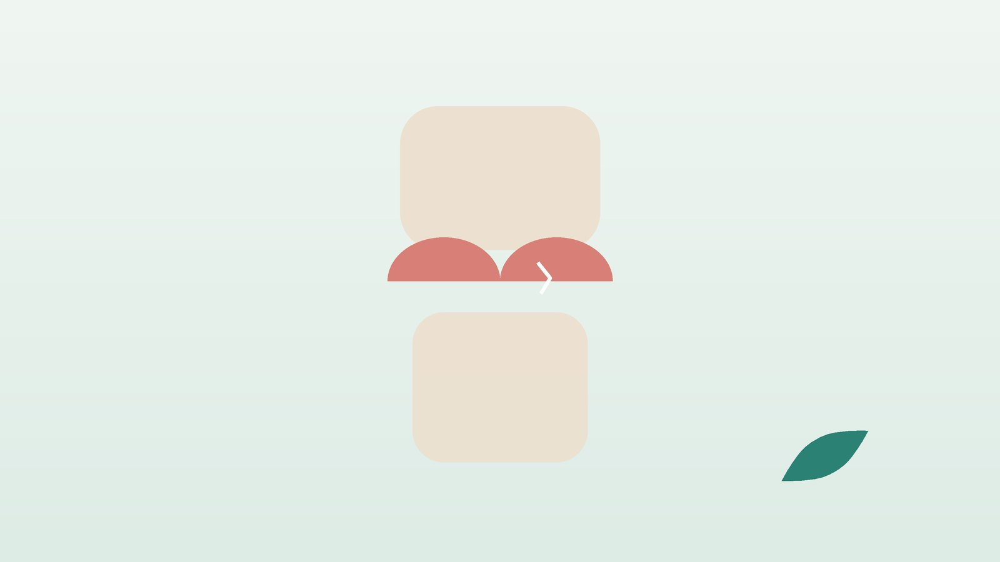

건강 칼럼 · 인천 반월상연골 손상 한의원
무릎이 걸리고 쪼그려 앉기 힘들다면, 반월상연골 손상 한방 관리

내 무릎, 연골판 손상일까요?
- 쪼그려 앉았다 일어날 때 무릎 안쪽이나 바깥쪽 틈이 찌르듯 아프다
- 걷다가 무릎 안에 뭔가 끼인 듯 '턱' 걸리는 순간이 있다
- 무릎을 비틀며 방향을 틀 때 통증이 튄다
- 다친 다음 날부터 무릎이 서서히 부어올랐다
- 계단을 내려갈 때 무릎이 순간 풀리듯 힘이 빠진다
- 무릎 관절 틈을 손으로 누르면 한 점이 유난히 아프다
이 체크리스트는 진단 도구가 아닙니다. 연골판 손상은 MRI로 확인하며, 무릎이 펴지지 않게 잠기면 바로 정형외과 진료를 받으세요.
바로 정형외과에 가야 하는 무릎 신호
- 무릎이 일정 각도에서 꽉 잠겨 끝까지 펴지지 않는다
- 다치고 몇 시간 안에 무릎이 풍선처럼 크게 부어올랐다 (인대 파열이나 관절 내 출혈 의심)
- 다칠 때 '뚝' 소리가 났고 무릎이 빠지는 느낌이 반복된다
- 체중을 전혀 싣지 못하거나 무릎 모양이 변했다
- 무릎이 붉고 뜨거우며 열이 난다 (감염 의심)
- 종아리가 붓고 단단하며 아프다 (혈전 의심)
잠긴 무릎은 찢어진 연골 조각이 관절 사이에 끼었을 수 있어 정형외과에서 MRI와 관절경 수술 여부를 빨리 판단해야 합니다. 젊은 나이에 외상으로 찢어진 경우도 봉합이 가능한지 먼저 확인하세요.
연골판은 왜 찢어지나요?
반월상연골은 무릎에 실리는 체중을 넓게 퍼뜨리고 관절을 안정시키는 쿠션입니다. 바깥 가장자리에만 혈관이 있고 안쪽은 혈류가 적어, 한번 찢어지면 저절로 붙기 어렵습니다.
- 외상성 파열: 운동 중 발을 디딘 채 몸을 비틀거나 점프 후 착지하다 생기며 젊은 층에 많고, 전방십자인대 손상이 함께 오기도 합니다.
- 퇴행성 파열: 40~50대 이후 연골판이 닳아 약해지면 쪼그려 앉기 같은 일상 동작만으로도 찢어집니다. 무릎 안쪽 연골판에 더 흔합니다.
- 무릎관절염과의 관계: 퇴행성 파열은 관절염 초기와 함께 오는 경우가 많아, 통증이 연골판 때문인지 관절 전체의 문제인지 구분해 봐야 합니다.
중년 이후의 퇴행성 파열에서는 관절경 부분 절제술과 가짜 수술을 비교한 연구에서 1년 뒤 증상 차이가 크지 않았다는 결과가 있어, 잠김이 없다면 비수술 치료를 먼저 시도하는 경우가 많습니다.
한의학은 연골판 손상을 어떻게 보나요?
한의학에서는 무릎이 아프고 굽혔다 펴기 힘든 증상을 슬통(膝痛), 다쳐서 힘줄과 연골이 상한 것을 근상(筋傷)으로 다룹니다. 『황제내경 소문』 맥요정미론편은 '무릎은 근의 집(膝者筋之府)'이라 하여, 무릎을 굽혔다 펴지 못하는 것을 근이 지쳐 가는 징조로 보았습니다.
갓 다친 무릎은 기혈이 뭉친 어혈과 붓기를 먼저 풀고, 오래 닳아 생긴 손상은 근골을 기르는 간신(肝腎)의 기운이 약해진 바탕을 함께 살핍니다.
나의 무릎 통증은 어떤 유형일까?
MRI 등으로 손상 정도를 확인한 뒤 함께 쓰는 한의학적 구분입니다.
1. 기체혈어(氣滯血瘀) 다친 뒤 붓는 유형
- 이런 분에게 많아요
- 운동이나 계단에서 무릎을 비튼 분
- 나타나는 모습
- 관절 틈 한 점이 찌르고 굽히면 더 아프다
- 함께 오는 몸의 신호
- 다음 날 붓기, 열감, 멍
- 진찰에서 보이는 모습
- 혀가 어둡고 맥이 깔깔함
- 치료 방향
- 뭉친 혈을 풀고 붓기를 빼는 방향 (도홍사물탕 계열)
- 오늘부터 해 볼 것
- 다친 직후 이틀은 얼음찜질과 다리 올리기를 해 주세요.
2. 습열(濕熱) 물이 차고 뜨거운 유형
- 이런 분에게 많아요
- 체중이 늘었거나 붓기가 오래 가는 분
- 나타나는 모습
- 무릎이 묵직하게 붓고 만지면 따끈하다
- 함께 오는 몸의 신호
- 몸이 무겁고 소변이 진함
- 진찰에서 보이는 모습
- 혀가 붉고 누런 태가 끼며 맥이 미끄러움
- 치료 방향
- 습과 열을 빼 관절의 붓기를 가라앉히는 방향 (사묘산 계열)
- 오늘부터 해 볼 것
- 짠 음식과 술을 줄이고 오래 서 있는 시간을 나눠 주세요.
3. 간신부족(肝腎不足) 닳아서 시큰한 유형
- 이런 분에게 많아요
- 50대 이후, 쪼그려 일을 오래 해 온 분
- 나타나는 모습
- 큰 외상 없이 시큰거리다 걸림이 생겼다
- 함께 오는 몸의 신호
- 허리가 함께 시큰하고 다리에 힘이 빠짐
- 진찰에서 보이는 모습
- 허벅지 근육이 가늘어지고 맥이 약함
- 치료 방향
- 간신을 보해 근골을 기르는 방향 (독활기생탕 계열)
- 오늘부터 해 볼 것
- 의자에 앉아 무릎 펴고 5초 버티기를 하루 세 번 해 보세요.
한의원에서는 어떻게 진찰하나요?
- 다친 상황: 비틀었는지, 소리가 났는지, 붓기가 언제 생겼는지와 잠김 여부를 여쭙습니다.
- 관절 틈 누르기와 회전 검사: 무릎을 굽혔다 돌리며 걸리는 느낌과 통증이 재현되는지 봅니다.
- 인대 안정성: 앞뒤·옆으로 흔들어 인대 손상이 함께 있는지 확인합니다.
- 초음파와 영상: 관절 안 물과 안쪽 인대, 연골판 가장자리를 보고, MRI 결과가 있으면 함께 봅니다.
침·약침·추나·한약 치료는 어떻게 하나요?
1. 침 치료
- 내슬안(內膝眼)·독비(犢鼻): 무릎을 굽혔을 때 무릎뼈 아래 힘줄 양옆에 생기는 두 오목한 곳입니다.
- 음릉천(陰陵泉): 정강이뼈 안쪽 위 끝의 오목한 곳으로, 안쪽 연골판 쪽 통증과 붓기에 씁니다.
- 양릉천(陽陵泉): 종아리뼈 머리 앞아래 오목한 곳으로, 근(筋)이 모이는 혈이라 하여 힘줄 손상에 자주 씁니다.
- 슬양관(膝陽關): 무릎 바깥쪽, 넓적다리뼈 바깥 볼록한 곳 위의 오목한 자리입니다.
붓기가 있을 때는 자극을 약하게 하고, 붓기가 빠지면 허벅지 근육을 깨우는 쪽으로 바꿉니다.
2. 약침·초음파 가이드 약침과 추나 요법
약침은 일반 약침과 초음파 가이드 약침을 모두 시행하며, 아픈 부위의 깊이와 주변 구조에 따라 진찰 후 골라 씁니다. 초음파 가이드 약침은 초음파 화면으로 바늘 끝을 확인하면서 놓는 방식입니다. 초음파로 연골판이 관절 바깥으로 밀려 나온 자리와 안쪽 측부인대의 붓기, 관절에 고인 물을 확인하며 아픈 관절 틈 주변에 정확히 놓습니다. 골반과 고관절이 틀어져 무릎에 비틀리는 힘이 실리는 경우 진찰 후 추나 요법을 시행하며, 잠김이 있거나 갓 다친 무릎은 교정하지 않습니다.
3. 한약
다친 초기에는 어혈과 붓기를 풀고, 회복기에는 근골을 기르는 방향으로 탕약을 처방합니다. 진통소염제 등 복용 중인 약은 알려 주시면 확인해 처방합니다. 임신 중이거나 신장 질환 병력이 있다면 진료 때 꼭 알려 주세요. 확인 후 안전한 약재로 처방합니다. 한약은 원장이 원내 탕전실에서 약재 선별부터 달이는 과정까지 직접 관리하며, 10일분씩 처방해 복용 경과를 보고 약재 구성과 양을 조절합니다. 아픈 자리는 초음파 가이드 약침과 추나로 다스리고, 통증이 오래가게 만드는 몸속의 기혈 순환과 장부 기능은 체질에 맞춘 한약으로 함께 살피면 통증 완화와 재발 관리를 함께 도모할 수 있습니다.
원장님이 네이버 블로그에 진료 이야기와 건강 정보를 꾸준히 올리고 있습니다. 더 많은 이야기는 블로그에서 확인해 보세요.
블로그 보기관리는 어떤 순서로 진행되나요?
- 손상 확인 잠김과 큰 붓기가 있으면 정형외과를 먼저 안내하고, 없으면 진찰과 초음파로 상태를 봅니다.
- 붓기 조절기 침과 약침, 한약으로 붓기와 관절 틈 통증을 줄입니다.
- 근력 회복기 허벅지 앞뒤 근육과 엉덩이 근육을 키워 연골판에 걸리는 부담을 나눕니다.
- 일상 복귀 계단, 쪼그려 앉기, 운동을 단계적으로 늘리며 재발 신호를 확인합니다.
기간과 횟수는 증상이 얼마나 오래되었는지, 동반 증상이 무엇인지에 따라 달라지며, 진찰 후 개인별로 안내합니다.
연골판을 아끼는 생활 관리
- 쪼그려 앉지 않기: 걸레질, 텃밭 일, 양반다리는 낮은 의자를 쓰거나 서서 하는 방식으로 바꿉니다.
- 비틀기 주의: 발을 디딘 채 몸만 돌리지 말고, 방향을 바꿀 때는 발부터 옮기세요.
- 허벅지 힘 기르기: 누워서 무릎을 편 채 다리를 30cm 들어 5초 버티기를 10번 합니다.
- 체중 관리: 몸무게가 줄면 걸을 때 무릎에 실리는 부담도 함께 줄어듭니다.
- 통증 기록: 걸림이 생긴 동작과 붓기를 적어 오세요.
다른 진료가 함께 필요한 경우
- 무릎이 잠기거나 반복해서 빠지는 느낌이 들면 정형외과에서 MRI와 수술 여부를 확인하세요.
- 다칠 때 소리가 나며 크게 부었다면 십자인대 손상을 함께 확인해야 합니다.
- 무릎이 붉고 뜨겁게 붓고 열이 나면 감염을 배제하기 위해 바로 병원에 가세요.
- 관절염약이나 혈압약을 드신다면 담당 의사와 상의 없이 끊지 마세요.
자주 묻는 질문 Q&A
- Q1. 반월상연골이 찢어지면 꼭 수술해야 하나요?
- 무릎이 잠기거나 젊은 나이의 외상성 파열은 수술 판단이 먼저이고, 중년 이후 퇴행성 파열은 비수술 치료를 먼저 하는 경우가 많습니다.
- Q2. 찢어진 연골판이 다시 붙나요?
- 혈관이 있는 바깥 가장자리는 회복 여지가 있지만, 안쪽은 붙기 어려워 통증과 기능 회복을 목표로 합니다.
- Q3. 엑스레이에서 이상이 없다는데 왜 아프죠?
- 연골판은 엑스레이에 보이지 않아 MRI나 초음파로 확인합니다.
- Q4. 걸어도 괜찮나요?
- 아프지 않은 범위의 평지 걷기는 괜찮지만, 등산과 계단 내려가기는 줄여 주세요.
- Q5. 무릎 보호대를 차는 게 좋을까요?
- 붓기가 있는 초기에 잠깐 쓰는 것은 도움이 되지만, 오래 의지하면 허벅지 근육이 약해집니다.
- Q6. 수술 뒤에도 한방 치료를 받을 수 있나요?
- 가능합니다. 수술한 병원의 재활 지침에 맞춰 통증과 붓기를 관리합니다.
- Q7. 교통사고로 무릎을 다쳤는데 자동차보험 진료가 되나요?
- 가능합니다. 무릎이 크게 부었다면 인대 손상도 함께 확인하세요.
- Q8. 집에서 해 볼 지압이 있나요?
- 무릎 안쪽 아래 음릉천혈을 엄지로 지그시 눌러 보세요. 붓고 뜨거우면 누르지 마세요.
문원열 대표원장한의사 · 365스마일한의원
임상 경력 15년, 인천 서구 가정동에서 개원 후 10년째 진료하고 있으며, FCST 턱관절학회·연부조직학회·침도학회 등에서 활동합니다. 아픈 곳만이 아니라 증상의 원인을 찾아 진료합니다.
진료 안내
- 진료시간
- 평일 09:00~20:00 (점심시간 13:00~14:00, 접수 마감 19:30)
토·일·공휴일 09:00~15:00 (접수 마감 14:30) - 주소
- 인천광역시 서구 가경주로 46, 2층 (가정동)
인천2호선 가정중앙시장역 인근
영상으로 길 안내 보기 → - 주차
- 한의원 건물 바로 앞 1층 도원주차장
- 예약
- 예약 바로가기 또는 전화 예약
진료시간은 사정에 따라 바뀔 수 있으니 방문 전 전화로 확인해 주세요.
함께 읽으면 좋은 칼럼
건강 칼럼 전체 보기 →

참고 자료
- Sihvonen R, et al. Arthroscopic partial meniscectomy versus sham surgery for a degenerative meniscal tear. N Engl J Med, 2013
- 『황제내경 소문(素問)』 맥요정미론(脈要精微論)
- 질병관리청 국가건강정보포털 — 원문
※ 이 글은 일반적인 건강 정보이며, 개인의 상태에 따라 치료 방법과 결과는 다를 수 있습니다. 정확한 진단과 치료는 진료를 통해 결정됩니다. 침·약침 시술 후 드물게 멍, 통증 등이 생길 수 있습니다.